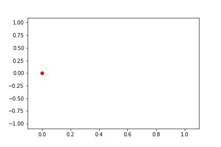

- 講師：山崎俊彦
- 参考書：CG-ARTS協会発行「ディジタル画像処理」
- 参考書：R. Szeliski, Computer Vision Algorithms and Applications, Springer (PDF版はインターネット上で無料公開)
In [1]:
import cv2
import numpy as np
import matplotlib.pyplot as plt
動画像は、静止画の集まり（パラパラ漫画）
- 10~15[fps]あると、人は動画だと感じる。
- 映画：24[fps]
- TV、インターネット動画：30~60[fps]
- ロボット制御に必要な速度（アクチュエーターの反応速度が~ms）：1,000[fps]
- 自動運転 ~ 10,000[fps]
| 10[fps] | 25[fps] | 50[fps] |
|---|---|---|
 |
 |
→ 何をするか？
動物体の検出・解析
背景差分・フレーム間差分¶
【問題】
- 照明変化（屋外では良く起こる）、背景の変化（木の揺れ等）に弱い。
- 背景画像をどうやって作るかもポイント。
【統計的背景差分】
各ピクセルで時間的に統計情報を取ってもう少しsmartに背景差分することを考える。背景クラスを $w_b$ 前景クラスを $w_f$ とすると、やることは、$\left(p\left(w_f | I(x,y)\right), p\left(w_b | I(x,y)\right)\right)$ のうち確率の高いクラスを採用する。
ここで、ベイズの定理より、
$$ \begin{cases} \begin{aligned} p\left(w_f | I(x,y)\right) &= \frac{p(w_f)p(I\left(x,y)|w_f\right)}{p(I(x,y))}\propto p(w_f)p\left(I(x,y)|w_f\right)\\ p\left(w_b | I(x,y)\right) &= \frac{p(w_b)p(I\left(x,y)|w_b\right)}{p(I(x,y))}\propto p(w_b)p\left(I(x,y)|w_b\right) \end{aligned} \end{cases} $$- $p(w_b, w_f)$：その画素が $w_b, w_f$ である事前確率（例：木の上に人や車はいないので、$p_b$ 大, $p_f$：小）
- $p(I|w_c)$：$w_c$ だった時に、どの程度の確率でその画素値が観測されるか。
動き量の計算¶
【ブロックマッチング(Block Matching)】
- ある時刻 $t$ におけるある領域に最も似ている時刻 $t+1$ の領域を、以下の手法等を用いて探す。
- SSD(Sum of Squared Difference)
- SAD(Sum of Absolute Difference)
- NCC(Normalized Cross Correlation)
- 動画像圧縮では、この動きベクトル(motion vector)と差分を符号化することで圧縮を実現。
【オプティカルフロー(optical flow)】
- 2枚の画像間で、変化が微小だとすると、 $$\begin{aligned}I(x+\Delta x, y+\Delta y, t+\Delta t) &\simeq I(x,y,t) + \frac{\partial I}{\partial x}\Delta x + \frac{\partial I}{\partial y} \Delta y+ \frac{\partial I}{\partial t} \Delta t + \cdots\\\rightarrow I_x\Delta x + I_y\Delta y + I_t\Delta t&\simeq0\\ I_x\frac{\Delta x}{\Delta t} + I_y\frac{\Delta y}{\Delta t} + I_t &= 0\\\left(\Delta t\rightarrow0\right)\qquad I_xu+I_yv+I &= 0\\(u,v) &= \left(\frac{dx}{dt},\frac{dy}{dt}\right)\end{aligned}$$
- これだけだと、自由度が高すぎて一意に決まらないので、微小領域では動きが滑らかという仮定を置く。（Lucas-Kanada法, 1981） $$\mathbf{G} = \left[\begin{array}{c}I_{x_1} &I;_{y_1} \\\vdots&\vdots\\I_{x_m}&I;_{y_m}\end{array}\right],\quad \mathbf{f} = \left[\begin{array}{c}u \\v\end{array}\right],\quad\mathbf{b} = \left[\begin{array}{c}I_{t_1} \\\vdots\\I_{t_m}\end{array}\right]$$ 上記のように定義し、滑らかさの条件を使うと、 $$\begin{aligned}\mathbf{Gf}+\mathbf{b} &= \mathbf{0}\\\therefore\mathbf{f}^{\ast}&=-\left(\mathbf{G}^T\mathbf{G}\right)^{-1}\mathbf{G}^T\mathbf{b}\quad \left(\because\text{Least squares}\right)\end{aligned}$$
【DNNによる映像処理】
(x,y,t)の3次元をどう扱うか？
- 画像（2次元）と時間の情報を分ける。
- 3D Convolution：空間情報と時間情報を同時に畳み込む。
- 仮想3D Convolution：空間情報を畳み込んで、その後時間方向に畳み込む。
動画の編集
In [ ]:
動画の理解・認識
In [ ]: